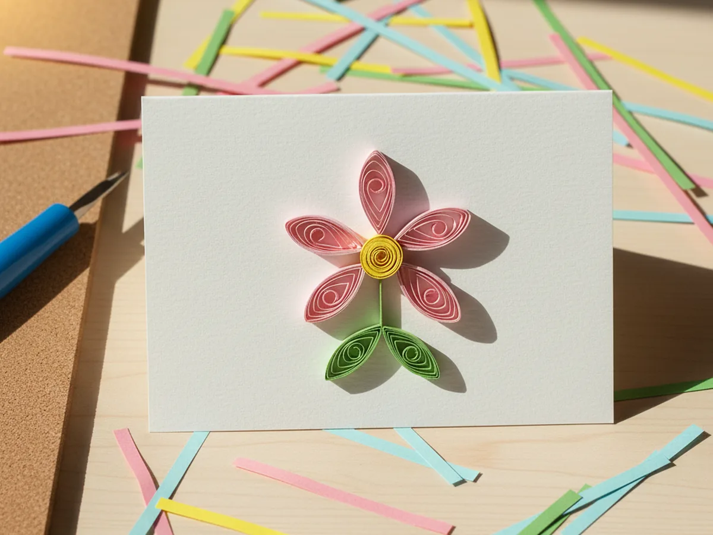
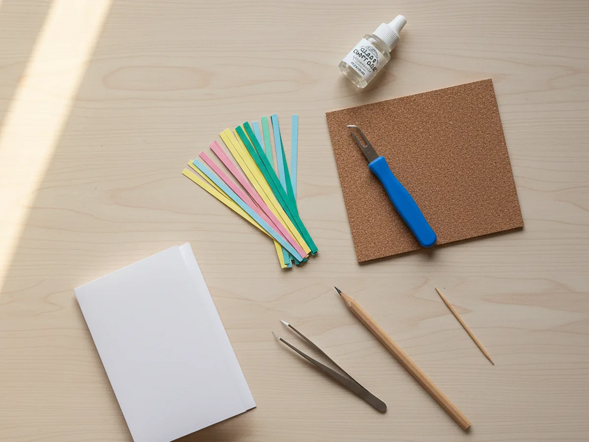
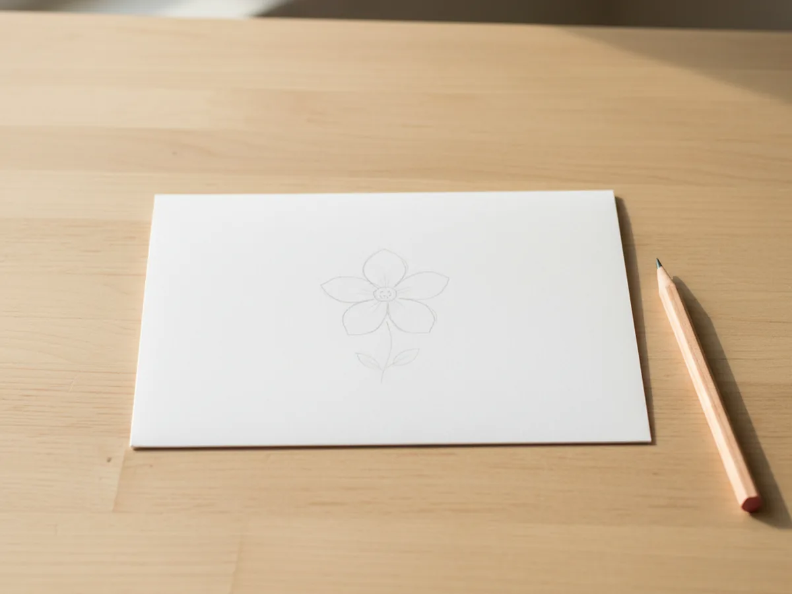
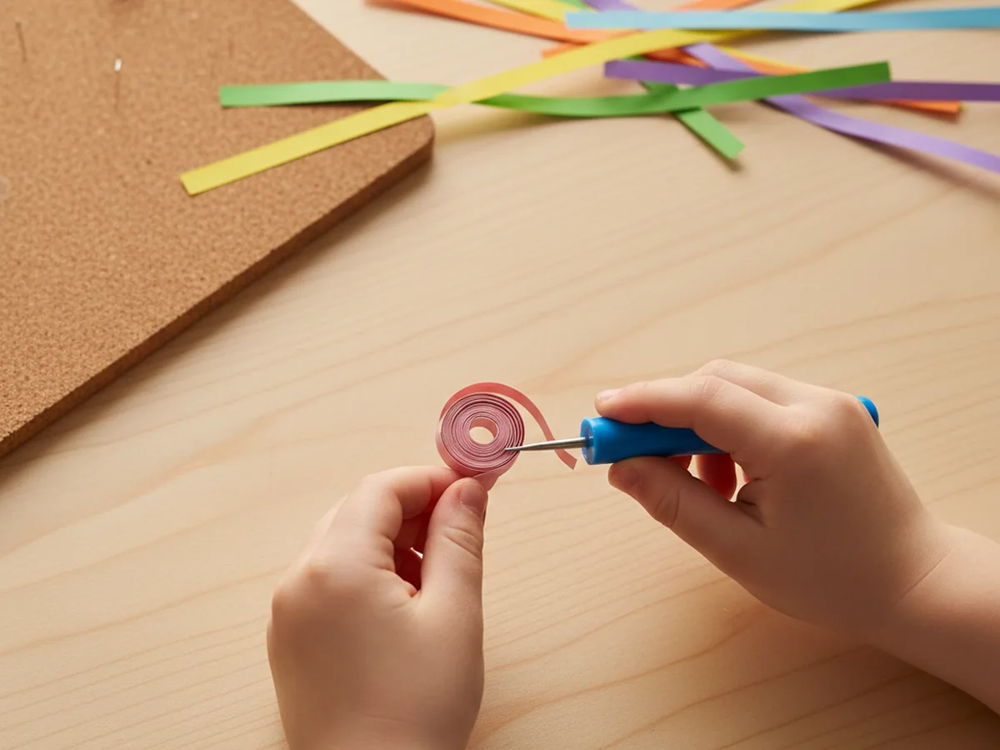
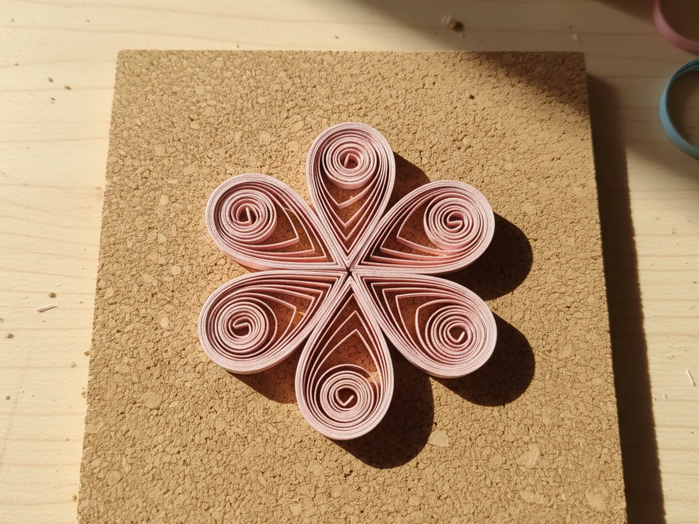
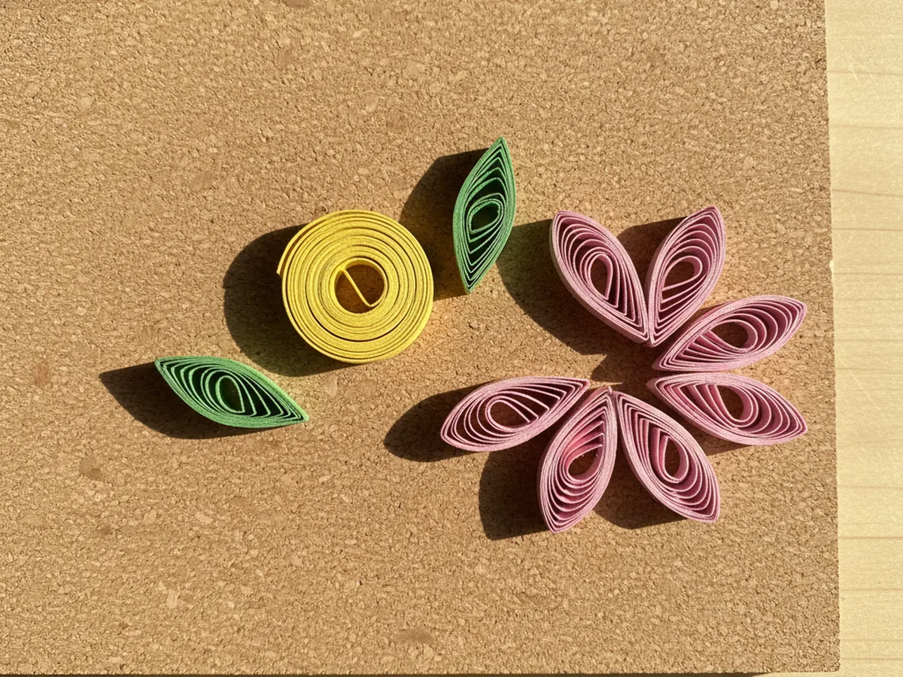
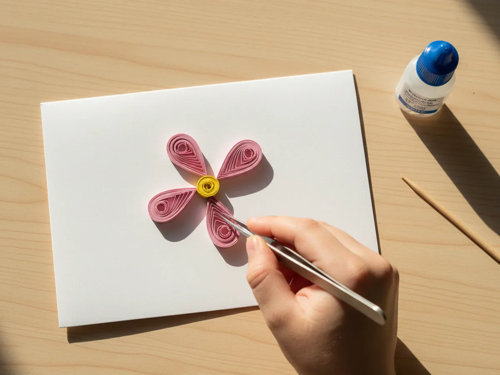

This little quilling paper craft is one of those calm, focused afternoons where a small bin of colorful paper strips and a tiny slotted tool turn into the prettiest little handmade flower card. You roll thin strips into loose coils, pinch the coils into petal shapes, and glue them together into a sweet flower on the front of a folded card. The first time your child watches a flat strip of paper become a tidy little spiral, you can almost see their eyes get wide. ✨
It is a gentle, low-mess project for kids age 5 and up, and one of the loveliest ways to introduce a child to a real piece of paper art at home. Younger kids can roll loose coils with a little help, while older kids can pinch petals and arrange the whole flower on their own. Either way, this quilling paper craft ends up looking display-worthy and feels like a beautiful piece of work they made with their own two hands.
Why Kids Love This Craft
There is something quietly magical about watching a flat paper strip turn into a perfect little spiral. Quilling has the same gentle, focused feeling as bead threading or play dough rolling. Each coil pops off the slotted tool feeling like a tiny accomplishment, and the soft rhythm of rolling, pinching, and gluing helps even busy little ones settle into a calm and steady groove. By the time their first flower comes together on the card front, they are usually beaming with quiet pride.
This craft is also a beautiful little workout for fine motor skills. Threading the strip into the slotted tool, rolling the coil with steady fingers, pinching one side into a teardrop shape, and gluing each coil exactly where it goes all build the same hand muscles that help with writing, buttoning, and using utensils. None of it ever feels like practice though. It just feels like pretty paper turning into pretty flowers.
The best part is the moment they finish their first flower. Picking the colors, deciding where each petal lands, and seeing it all glued in place gives kids that real "I made this" feeling. A simple paper quilling craft like this one tends to look far prettier than you might expect from a beginner project, which makes the pride that much sweeter. 💐
What You'll Need
Here is everything you need to make this quilling paper craft at home. Most of it comes together as one little starter kit, which keeps the whole setup simple.
- JUYA Paper Quilling Kit, 30 Colors and 600 Strips with 8 Tools, a complete starter kit with strips, slotted tools, tweezers, and a cork board for shaping coils
- Aleene's Clear Gel Tacky Glue, 4 oz, dries crystal clear so glue dots disappear under the delicate coils
- 100 Pack White Cardstock 5x7 Blank Cards, the perfect sturdy base for a finished quilling flower card
- Quilled Creations Quilling Tweezers, sharp little tweezers that grab tiny coils without smudging the glue
- A pencil, optional for sketching a light flower outline before gluing
- A toothpick, handy for dabbing tiny dots of glue exactly where you need them
Step-by-Step Instructions
Take this one calm step at a time and your child will have a finished flower card in about 45 minutes. Let them handle every step they can manage, even if it is just choosing the next color.
Step 1: Set Up Your Quilling Paper Craft Space
Lay out a clean placemat or piece of scrap paper to catch any glue dots, and arrange your quilling kit so everything is within easy reach. Pull out three or four colors of strips for the petals, one or two warm colors for the flower center, and one green for the leaves. Set the slotted tool, the cork board, the glue, and a folded blank card right next to your child. Choosing the colors together is half the fun for kids.

Step 2: Sketch a Light Flower Outline
Open the card flat and use a pencil to lightly sketch a simple five petal flower in the center of the front. Draw a small circle in the middle for the flower center and two small leaf shapes off to the side at the bottom. Keep the lines very light, since the coils will cover them once everything is glued down. This soft outline gives your child a clear map for where each petal goes.

Step 3: Roll Your First Loose Coil with the Slotted Tool
Tear or cut a paper strip about 8 inches long. Slide one end of the strip into the small slot at the top of the slotted quilling tool. Hold the tool in one hand and the strip in the other, then turn the tool slowly so the strip wraps around itself into a tiny rolled coil. When you reach the end, gently slide the coil off the tool and let it relax into a loose round spiral. Place it on the cork board to hold its shape while you roll the next one.

Step 4: Pinch the Coils into Teardrop Petals
This is the magic moment that makes flat coils look like real flower petals. Pick up one relaxed coil, hold it gently between two fingers, and pinch one side into a sharp point. The other side stays round. You just made a teardrop shape. Make five teardrop petals in your chosen flower color and set them on the cork board with the points facing inward, like petals around an empty center. Even a young child can master this little pinch with two or three tries.

Step 5: Make a Tight Center Coil and Small Leaves
For the flower center, roll a strip of yellow or warm pink the same way as before, but do not let it relax. Slide it off the tool and immediately glue the loose end down so the coil stays tight and small. For the leaves, roll two green coils, let them relax, and pinch both ends into points to make leaf shaped marquise coils. Place all your shapes on the cork board so you can see the whole flower coming together before any glue touches the card.

Step 6: Glue the Coils onto the Card
Time for the gentlest part of this easy quilling paper craft. Use a toothpick to dab a tiny dot of clear-drying glue onto the underside of each coil, then press it onto the matching spot on your pencil outline. Start with the five teardrop petals so the flower shape comes together first, then add the tight coil center, and finish with the two leaves. Tweezers help kids place each coil exactly where they want it without smudging anything. Hold each coil down for about 5 seconds to let the glue grab.

Step 7: Sign and Display the Finished Quilling Paper Craft
Let the card sit flat for about 10 minutes so the glue can fully dry. Once it is set, your child can write a sweet message inside, sign their name, and proudly hand the card to a grandparent, a teacher, or anyone else they want to surprise. A first finished quilling paper craft usually goes straight to the fridge, the bookshelf, or a special someone. 💛
Variations to Try
Heart-Shaped Quilling Card: Skip the flower and pencil a small heart outline onto the card front instead. Fill the inside of the heart shape with rolled red and pink loose coils for a sweet handmade Valentine's Day card. The same coil rolling technique works beautifully inside any simple shape.
Quilled Initial Letter: Pencil your child's first initial onto the card in a chunky bubble style and have them fill the inside of the letter with mini coils in their favorite colors. The result feels very personal, looks beautiful framed, and makes a memorable gift for grandparents.
Tissue Paper Mosaic Version: For toddlers too young for true quilling, swap the strips for small torn tissue paper squares glued into the same petal positions. Same craft moment, same pretty card, with a much simpler technique that even a 3 year old can manage.
Final Thoughts
A handmade quilling paper craft is one of those quiet, focused projects that feels surprisingly impressive when it is done. A few colorful strips, a slotted tool, and 45 minutes at the table is enough to give your child a finished card that genuinely looks like a real piece of paper art. The best part is the calm afternoon you spend together, side by side, taking turns rolling, pinching, and placing each little coil. Happy crafting, mama. 🌷
More Crafts You'll Love
If your family enjoyed making this little quilling card, here are two more sweet paper crafts to try together next.